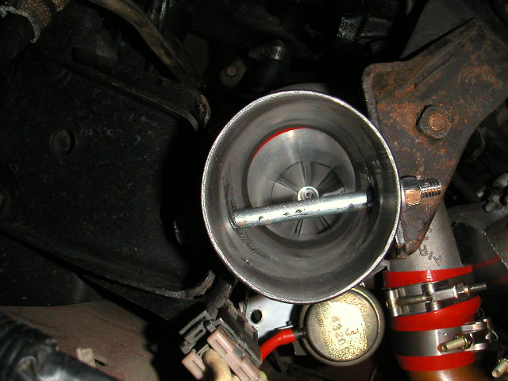
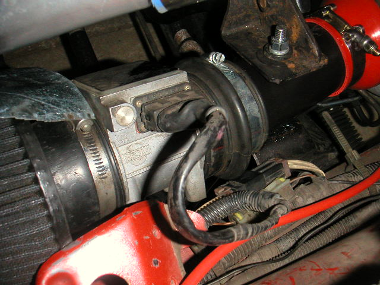

-
I'm planning on making an intake /motor mount and had some questions about it. First off I was wondering which is the most prefered way of running the bolt through the pipe? Cause the two ways I see are either I run a threaded rod through it and weld both ends so I don't get air leaks, or I weld a small pipe inside the intake for a bolt to pass through. Also I read on Jason's site that the inlet on the T3 is 2" but I measured the stock inlet pipe at 2.25" and was wondering if this is right? Thanks for any help.Bah-chicka-wow-wow -
Okay after a little more research I found out that the T3 compressor inlet is 2.25", but I ran into another question. Some people say that you have to crush the pipe to 2 5/8" to get the motor to sit level while others say they didn't have that problem with the 3" pipe. So which is it? Cause I thought the stock motor mounts where 3" at least that's what I see on my car. Plus the pictures on Jason's site doesn't look like it's been crushed.
*EDIT* I stand corrected it is crushed a little.

Bah-chicka-wow-wow -
I was going to consider JB weld as a seal, but JB weld can crack when torquing the bolt… and that's not somewhere that I would want pieces of JB weld flying off of.
you could always use a silicone sealant after it's torqued down and let it set. something like a urethane glue. -
a 3inch pipe will have to be crushed or your engine will sit crooked. i couldent stand the look so i crushed my pipe a bit. Also, you dont have to drill through the pipe you can use one of those silicone couplers the are flexable, and offset the pipe a bit and run a bolt on the side of the pipe and drill a new hole in the motor mount.I hate wheel gap with a extreme passion

my build
viewtopic.php?t=2755
seller feedback
viewtopic.php?f=18&t=10430 -
If it does have to be crushed couldn't I just buy a pipe the size that I'd be crushing the 3" to?Bah-chicka-wow-wow -
Yes,Amadeus wrote: If it does have to be crushed couldn't I just buy a pipe the size that I'd be crushing the 3" to?
The engine mounts are around 2.5" tall, so the pipe would be crushed slightly for the engine to sit level. I did it eventually and also tack a sleeve inside the pipe. I felt I needed 3" at least to make a difference in airflow with the consideration of a sleeve and the bolt running right through the center of it. -
if someone wants, i have a blow through mount that i used on my car that i could sell seeing as i no longer have a VG in my Z…
1988 570zx SS Edition
Originally posted by Neil86t -
interested.bleakdragonmage wrote: if someone wants, i have a blow through mount that i used on my car that i could sell seeing as i no longer have a VG in my Z…
Pic?
-
[quote]vagabond wrote:ill grab one when i get home from work.Originally posted by bleakdragonmage
1988 570zx SS Edition
Originally posted by Neil86t -
how do you guys feel of running a slightly thicker pipe for this part of the engine mount and welding a stud to the top and the bottom.. that way it's sturdy, it's welded in. and the pipe is a true 3 inch pass due to no sleeve?
even using heavy duty bolts and welding them on the inside rather than a sleeve makes more sense… and with it flattened, it should be easier to get the weld on the bolts to work all the way around them…
If you guys are currently using aluminum in whatever gauge and feel it's too soft so that's why the sleeve is there.. maybe steel in the same gauge will flow more, be a little heavier, and have enough rigidity with two bolt heads welded from inside.

Copyright © 2006–. All rights reserved. Privacy Policy